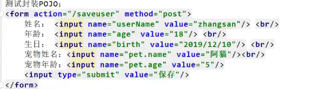

SpringBoot Web开发 请求参数处理 1. 请求映射 rest使用与原理
@xxxMapping; (@GetMapping, @PostMapping, @PutMapping, @DeleteMapping)
Rest风格支持（使用HTTP请求方式动词来表示对资源的操作）
以前：/getUser-获取用户 /deleteUser-删除用户 /editUser-修改用户 /saveUser-保存用户
现在: /user GET-获取用户 DELETE-删除用户 PUT-修改用户 POST-保存用户
核心Filter: HiddenHttpMethodFilter
用法: 表单 method = post, 隐藏域 _method = put
SpringBoot中手动开启
1 2 3 4 5 6 7 8 9 10 11 12 13 14 15 16 17 18 19 20 21 22 23 24 25 26 27 28 29 30 31 32 @GetMapping("/user") public String getUser () { return "GET-张三" ; } @PostMapping("/user") public String saveUser () { return "POST-张三" ; } @PutMapping("/user") public String putUser () { return "PUT-张三" ; } @DeleteMapping("/user") public String deleteUser () { return "DELETE-张三" ; } @Bean @ConditionalOnMissingBean(HiddenHttpMethodFilter.class) @ConditionalOnProperty(prefix = "spring.mvc.hiddenmethod.filter", name = "enabled", matchIfMissing = false) public OrderedHiddenHttpMethodFilter hiddenHttpMethodFilter () { return new OrderedHiddenHttpMethodFilter (); }
Rest原理（表单提交要使用REST的时候）
表单提交会带上 _method = PUT
请求过来之后会被HiddenHttpMethodFilter拦截
判断请求是否正常，并且是POST
获取 _method的值（兼容以下请求: PUT, DELETE, PATCH）
原生request (post方式), 包装模式的requestWrapper重写了getMethod方法，返回的是传入的值
过滤器链放行的时候用Wrapper作为request的对象放行了。requestWrapper封装了 _method的值，以后的方法调用getMethod时就是调用了requestWrapper
1 2 3 4 5 spring: mvc: hiddenmethod: filter: enabled: true
请求映射原理
SpringBoot是怎么知道当前的/user请求到底是要调用哪个方法的？
1 2 3 4 5 6 7 8 9 10 11 12 13 14 15 16 protected void doDispatch (HttpServletRequest request, HttpServletResponse response) throws Exception { HttpServletRequest processedRequest = request; HandlerExecutionChain mappedHandler = null ; boolean multipartRequestParsed = false ; WebAsyncManager asyncManager = WebAsyncUtils.getAsyncManager(request); try { ModelAndView mv = null ; Exception dispatchException = null ; try { processedRequest = checkMultipart(request); multipartRequestParsed = (processedRequest != request); mappedHandler = getHandler(processedRequest);
RequestMappingHandlerMapping: 保存了所有@RequestMapping和handler的映射规则（也就是保存了系统中自己写的类，每一个类里的每一个方法能处理什么请求）
WelcomePageHandlerMapping: SpringBoot自动配置欢迎页的映射，决定了访问”/“能访问到index.html
SpringBoot自动配置了默认的RequestMappingHandlerMapping
请求进来，挨个尝试所有的HandlerMapping看是否有请求信息
如果有就找到这个请求对应的handler
如果没有就找下一个HandlerMapping
如果需要自定义的映射处理，也可以自己给容器中放HandlerMapping。
2. 普通参数与基本注解 注解 @PathVariable(获取路径变量上的值), @RequestHeader(获取请求头), @RequestParam(获取请求参数), @CookieValue(获取cookie值), @RequestBody(获取请求体), @ModelAttribute
1 2 3 4 5 6 7 8 9 10 11 12 13 14 15 16 17 18 19 20 21 22 23 24 25 26 27 28 29 30 31 32 33 34 35 36 37 38 39 40 @RestController public class ParameterTestController { @GetMapping("/car/{id}/owner/{username}") public Map<String,Object> getCar (@PathVariable("id") Integer id, @PathVariable("username") String name, @PathVariable Map<String,String> pv, @RequestHeader("User-Agent") String userAgent, @RequestHeader Map<String,String> header, @RequestParam("age") Integer age, @RequestParam("inters") List<String> inters, @RequestParam Map<String,String> params, @CookieValue("_ga") String _ga, @CookieValue("_ga") Cookie cookie) { Map<String,Object> map = new HashMap <>(); map.put("age" ,age); map.put("inters" ,inters); map.put("params" ,params); map.put("_ga" ,_ga); System.out.println(cookie.getName()+"===>" +cookie.getValue()); return map; } @PostMapping("/save") public Map postMethod (@RequestBody String content) { Map<String,Object> map = new HashMap <>(); map.put("content" ,content); return map; }
@RequestAttribute(获取request域属性)
1 2 3 4 5 6 7 8 9 10 11 12 13 14 15 16 17 18 19 20 21 22 23 24 25 26 27 28 @Controller public class RequestController { @GetMapping("/goto") public String gotoPage (HttpServletRequest request) { request.setAttribute("msg" ,"成功了..." ); request.setAttribute("code" ,200 ); return "forward:/success" ; } @ResponseBody @GetMapping("/success") public Map success (@RequestAttribute("msg") String msg, @RequestAttribute("code") Integer code, HttpServletRequest request) { Object msg1 = request.getAttribute("msg" ); Map<String,Object> map = new HashMap <>(); map.put("requestMethod_msg" ,msg1); map.put("Annotation_msg" ,msg); map.put("code" ,code); return map; } }
@MatrixVariable(矩阵变量)
语法(访问路径): /cars/sell;low=34;brand=benz, bmw, audi
SpringBoot默认禁用 了矩阵变量的功能，需要手动开启
原理：UrlPathHelper中有一个属性removeSemicolonContent默认值为true，导致分号后面的内容被移除，只需要把值改为false就可以开启矩阵变量功能。
两种方法开启：
在配置类中实现WebMvcConfigurer，重写configurePathMatch()
@Bean，在容器中放入一个WebMvcConfigurer
1 2 3 4 5 6 7 8 9 10 11 12 13 14 15 16 17 18 19 20 21 22 23 24 25 26 27 28 @Configuration(proxyBeanMethods = false) public class WebConfig implements WebMvcConfigurer { @Override public void configurePathMatch (PathMatchConfigurer configurer) { UrlPathHelper urlPathHelper = new UrlPathHelper (); urlPathHelper.setRemoveSemicolonContent(false ); configurer.setUrlPathHelper(urlPathHelper); } } @Configuration(proxyBeanMethods = false) public class WebConfig { @Bean public WebMvcConfigurer webMvcConfigurer () { return new WebMvcConfigurer (){ @Override public void configurePathMatch (PathMatchConfigurer configurer) { UrlPathHelper urlPathHelper = new UrlPathHelper (); urlPathHelper.setRemoveSemicolonContent(false ); configurer.setUrlPathHelper(urlPathHelper); } }; } }
1 2 3 4 5 6 7 8 9 10 11 12 13 14 15 16 17 18 19 20 21 22 23 24 25 26 27 28 29 30 @Controller public class RequestController { @GetMapping("/cars/{path}") public Map carsSell (@MatrixVariable("low") Integer low, @MatrixVariable("brand") List<String> brand, @PathVariable("path") String path) { Map<String,Object> map = new HashMap <>(); map.put("low" ,low); map.put("brand" ,brand); map.put("path" ,path); return map; } @GetMapping("/boss/{bossId}/{empId}") public Map boss (@MatrixVariable(value = "age",pathVar = "bossId") Integer bossAge, @MatrixVariable(value = "age",pathVar = "empId") Integer empAge) { Map<String,Object> map = new HashMap <>(); map.put("bossAge" ,bossAge); map.put("empAge" ,empAge); return map; } }
Servlet API WebRequest、ServletRequest、MultipartRequest、 HttpSession、javax.servlet.http.PushBuilder、Principal、InputStream、Reader、HttpMethod、Locale、TimeZone、ZoneId
通过ServletRequestMethodArgumentResolver解析
1 2 3 4 5 6 7 8 9 10 11 12 13 14 15 16 @Override public boolean supportsParameter (MethodParameter parameter) { Class<?> paramType = parameter.getParameterType(); return (WebRequest.class.isAssignableFrom(paramType) || ServletRequest.class.isAssignableFrom(paramType) || MultipartRequest.class.isAssignableFrom(paramType) || HttpSession.class.isAssignableFrom(paramType) || (pushBuilder != null && pushBuilder.isAssignableFrom(paramType)) || Principal.class.isAssignableFrom(paramType) || InputStream.class.isAssignableFrom(paramType) || Reader.class.isAssignableFrom(paramType) || HttpMethod.class == paramType || Locale.class == paramType || TimeZone.class == paramType || ZoneId.class == paramType); }
复杂参数 Map, Model (map, model里面的数据会被放在request的请求域中，相当于调用了request.setAttribute方法)
RedirectAttributes(重定向携带数据)
ServletResponse(response响应)
Errors/BindingResult, SessionStatus, UriComponentsBuilder, ServletUriComponentsBuilder
1 2 3 4 5 6 7 8 9 10 11 12 13 14 15 16 17 18 19 20 21 22 23 24 25 26 27 28 29 30 @GetMapping("/params") public String testParam (Map<String,Object> map, Model model, HttpServletRequest request, HttpServletResponse response) { map.put("hello" ,"world111" ); model.addAttribute("world" ,"hello111" ); request.setAttribute("message" ,"HelloWorld" ); Cookie cookie = new Cookie ("c1" ,"v1" ); response.addCookie(cookie); return "foward:/success" ; } @ResponseBody @GetMapping("/success") public Map success (HttpServletRequest request) { Object hello = request.getAttribute("hello" ); Object world = request.getAttribute("world" ); Object message = request.getAttribute("message" ); Map<String,Object> map = new HashMap <>(); map.put("hello" ,hello); map.put("world" ,world); map.put("message" ,message); return map; }
对于Map和Model类型的参数 ，会返回mavContainer.getModel()
getModel()返回 ModelMap defaultModel = new BindingAwareModelMap()
BindingAwareModelMap 继承于 ExtendedModelMap 实现Model接口同时继承于ModelMap 继承于LinkedHashMap
所以BindingAwareModelMap是Model也是Map
自定义对象参数 可以自动类型转换与格式化，可以级联封装
1 2 3 4 5 6 7 8 9 10 11 12 13 14 15 16 17 18 19 20 21 22 23 24 25 26 27 @Data public class Person { private String userName; private Integer age; private Date birth; private Pet pet; } @Data public class Pet { private String name; private String age; } result
3. POJO封装过程 通过ServletModelAttributeMethodProcessor 处理器进行解析
4. 参数处理原理
HandlerMapping中找到能处理请求的Handler(Controller.method())
为当前Handler找一个适配器 HandlerAdapter;
适配器执行目标方法并确定方法参数的每一个值
HandlerAdapter
RequestMappingHandlerAdapter 支持方法上标注@RequestMapping的
HandlerFunctionAdapter 支持函数式编程的
…
执行目标方法 1 2 3 mv = ha.handle(processedRequest, response, mappedHandler.getHandler());
1 2 3 4 5 6 7 8 mav = invokeHandlerMethod(request, response, handlerMethod); Object returnValue = invokeForRequest(webRequest, mavContainer, providedArgs);Object[] args = getMethodArgumentValues(request, mavContainer, providedArgs);
参数解析器 HandlerMethodArgumentResolver 确定将要执行的目标方法的每一个参数的值是什么
SpringMvc目标方法能写多少种参数类型取决于参数解析器
26个参数解析器。
接口设计:
supportsParameter(MethodParameter): 判断当前解析器是否支持解析这种参数
resolveArgument(): 支持就调用这个方法进行解析
返回值处理器
如何确定目标方法每一个参数的值 在InvocableHandlerMethod这个类里
1 2 3 4 5 6 7 8 9 10 11 12 13 14 15 16 17 18 19 20 21 22 23 24 25 26 27 28 29 30 31 32 33 34 35 protected Object[] getMethodArgumentValues(NativeWebRequest request, @Nullable ModelAndViewContainer mavContainer, Object... providedArgs) throws Exception { MethodParameter[] parameters = getMethodParameters(); if (ObjectUtils.isEmpty(parameters)) { return EMPTY_ARGS; } Object[] args = new Object [parameters.length]; for (int i = 0 ; i < parameters.length; i++) { MethodParameter parameter = parameters[i]; parameter.initParameterNameDiscovery(this .parameterNameDiscoverer); args[i] = findProvidedArgument(parameter, providedArgs); if (args[i] != null ) { continue ; } if (!this .resolvers.supportsParameter(parameter)) { throw new IllegalStateException (formatArgumentError(parameter, "No suitable resolver" )); } try { args[i] = this .resolvers.resolveArgument(parameter, mavContainer, request, this .dataBinderFactory); } catch (Exception ex) { if (logger.isDebugEnabled()) { String exMsg = ex.getMessage(); if (exMsg != null && !exMsg.contains(parameter.getExecutable().toGenericString())) { logger.debug(formatArgumentError(parameter, exMsg)); } } throw ex; } } return args; }
挨个判断所有参数解析器里哪一个支持解析这个参数
上面代码的增强for循环中，第18行的 !this.resolvers.supportsParameter(parameter)方法的具体内容:
1 2 3 4 5 6 7 8 9 10 11 12 13 14 @Nullable private HandlerMethodArgumentResolver getArgumentResolver (MethodParameter parameter) { HandlerMethodArgumentResolver result = this .argumentResolverCache.get(parameter); if (result == null ) { for (HandlerMethodArgumentResolver resolver : this .argumentResolvers) { if (resolver.supportsParameter(parameter)) { result = resolver; this .argumentResolverCache.put(parameter, result); break ; } } } return result; }
解析这个参数的值
调用各自 HandlerMethodArgumentResolver 的 resolveArgument 方法即可
自定义类型参数 封装POJO
ServletModelAttributeMethodProcessor 这个参数处理器支持
判断参数是否为简单类型
1 2 3 4 5 6 7 8 9 10 11 12 13 public static boolean isSimpleValueType (Class<?> type) { return (Void.class != type && void .class != type && (ClassUtils.isPrimitiveOrWrapper(type) || Enum.class.isAssignableFrom(type) || CharSequence.class.isAssignableFrom(type) || Number.class.isAssignableFrom(type) || Date.class.isAssignableFrom(type) || Temporal.class.isAssignableFrom(type) || URI.class == type || URL.class == type || Locale.class == type || Class.class == type)); }
1 2 3 4 5 6 7 8 9 10 11 12 13 14 15 16 17 18 19 20 21 22 23 24 25 26 27 28 29 30 31 32 33 34 35 36 37 38 39 40 41 42 43 44 45 46 47 48 49 50 51 52 53 54 55 56 57 58 59 60 61 62 63 64 65 @Override @Nullable public final Object resolveArgument (MethodParameter parameter, @Nullable ModelAndViewContainer mavContainer, NativeWebRequest webRequest, @Nullable WebDataBinderFactory binderFactory) throws Exception { Assert.state(mavContainer != null , "ModelAttributeMethodProcessor requires ModelAndViewContainer" ); Assert.state(binderFactory != null , "ModelAttributeMethodProcessor requires WebDataBinderFactory" ); String name = ModelFactory.getNameForParameter(parameter); ModelAttribute ann = parameter.getParameterAnnotation(ModelAttribute.class); if (ann != null ) { mavContainer.setBinding(name, ann.binding()); } Object attribute = null ; BindingResult bindingResult = null ; if (mavContainer.containsAttribute(name)) { attribute = mavContainer.getModel().get(name); } else { try { attribute = createAttribute(name, parameter, binderFactory, webRequest); } catch (BindException ex) { if (isBindExceptionRequired(parameter)) { throw ex; } if (parameter.getParameterType() == Optional.class) { attribute = Optional.empty(); } bindingResult = ex.getBindingResult(); } } if (bindingResult == null ) { WebDataBinder binder = binderFactory.createBinder(webRequest, attribute, name); if (binder.getTarget() != null ) { if (!mavContainer.isBindingDisabled(name)) { bindRequestParameters(binder, webRequest); } validateIfApplicable(binder, parameter); if (binder.getBindingResult().hasErrors() && isBindExceptionRequired(binder, parameter)) { throw new BindException (binder.getBindingResult()); } } if (!parameter.getParameterType().isInstance(attribute)) { attribute = binder.convertIfNecessary(binder.getTarget(), parameter.getParameterType(), parameter); } bindingResult = binder.getBindingResult(); } Map<String, Object> bindingResultModel = bindingResult.getModel(); mavContainer.removeAttributes(bindingResultModel); mavContainer.addAllAttributes(bindingResultModel); return attribute; }
第42行: WebDataBinder binder = binderFactory.createBinder(webRequest, attribute, name);
WebDataBinder : web数据绑定器，将请求参数的值绑定到指定的JavaBean中
WebDataBinder利用它里面的Converters将请求数据转换成指定的数据类型，再封装到JavaBean中
GenericConversionService : 在设置每一个值的时候，找它里面的所有converter看哪个可以将这个数据类型（request带来参数的字符串）转换到指定的类型（如JavaBean ==> Integer， byte ==> file）
1 2 3 4 @FunctionalInterface public interface Converter <S,T>
可以给WebDataBinder里面放自己的Converter:
private static final class StringToNumber implements Converter<String, T>
测试封装POJO，提交宠物数据时，利用级联属性触发了底层的属性封装的过程

如果改成
那就需要自定义Converter进行字符串到对象的封装：
1 2 3 4 5 6 7 8 9 10 11 12 13 14 15 16 17 18 19 20 21 22 23 24 25 26 @Bean public WebMvcConfigurer webMvcConfigurer () { @Override public void addFormatters (FormatterRegistry registry) { registry.addConverter(new Converter <String, Pet>()){ @Override public Pet converter (String source) { if (!StringUtils.isEmpty(source)){ Pet pet = new Pet (); String[] split = source.split("," ); pet.setName(split[0 ]); pet.setAge(Integer.parseInt(split[1 ])); return pet; } return null ; } } } }
目标方法执行完成 将所有的数据都放在ModelAndViewContainer中，包含要去的页面地址View和数据Model
处理派发结果 怎么把Map和Model中的数据放入request请求域中的？
处理结果：processDispatchResult (processdRequest, response, mappedHandler, mv, dispatchException);
renderMergedOutputModel (mergedModel, getRequestToExpose(request), response);
step into进入到InternalResouceView这个类中
1 2 3 4 5 6 7 8 9 10 11 12 13 14 15 16 17 18 19 20 21 22 23 24 25 26 27 28 29 30 31 32 33 34 35 36 37 @Override protected void renderMergedOutputModel ( Map<String, Object> model, HttpServletRequest request, HttpServletResponse response) throws Exception { exposeModelAsRequestAttributes(model, request); exposeHelpers(request); String dispatcherPath = prepareForRendering(request, response); RequestDispatcher rd = getRequestDispatcher(request, dispatcherPath); if (rd == null ) { throw new ServletException ("Could not get RequestDispatcher for [" + getUrl() + "]: Check that the corresponding file exists within your web application archive!" ); } if (useInclude(request, response)) { response.setContentType(getContentType()); if (logger.isDebugEnabled()) { logger.debug("Including [" + getUrl() + "]" ); } rd.include(request, response); } else { if (logger.isDebugEnabled()) { logger.debug("Forwarding to [" + getUrl() + "]" ); } rd.forward(request, response); } }
第6行的方法:
1 2 3 exposeModelAsRequestAttributes(model, request);
step into:
1 2 3 4 5 6 7 8 9 10 11 12 13 protected void exposeModelAsRequestAttributes (Map<String, Object> model, HttpServletRequest request) throws Exception { model.forEach((name, value) -> { if (value != null ) { request.setAttribute(name, value); } else { request.removeAttribute(name); } }); }